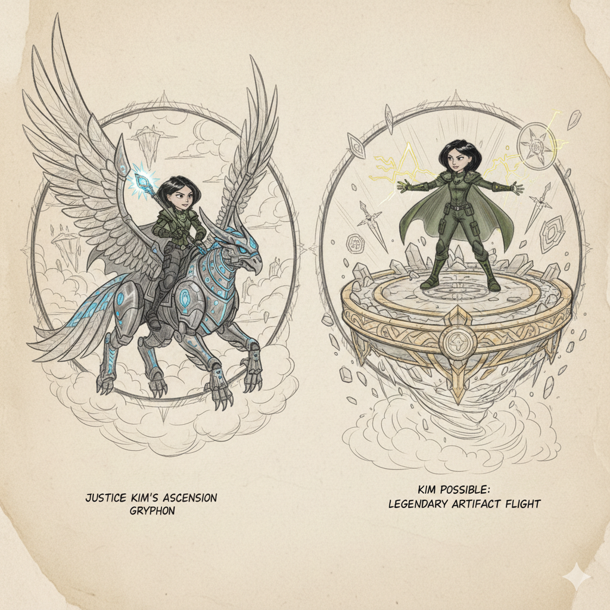
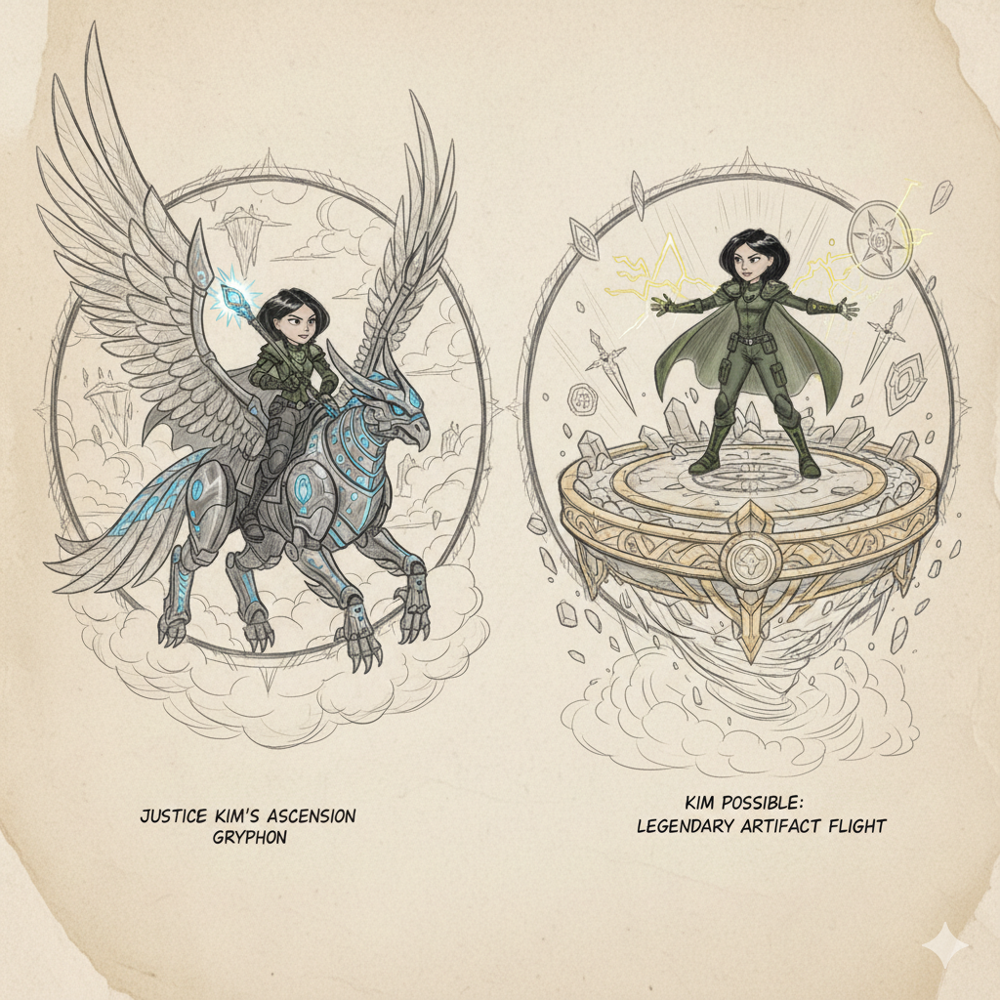

From Basic to Bar • Warrior Spirit • No Excuses
I want to make a way to let an algorithm help make decisions, when and why too. Humans often turn towards the mystical arts when they get stuck like a soothsayer. Someone who reads tarot cards or throw chicken bones to see a pattern. I think I got this principle down a little for you to turn into something of a function. Lets say we have all these paths we can take. For our purpose lets say as the floating 3D icons is the body of a future AI entity that controls what happened on the page. It could have options like move to somewhere on the page, move further or closer. Change its shape or color. Attempt to communicate with the user. This our paths we could take if we put ourselves into to future role of what we are creating here. Now lets do some humans like to do as an example and perhaps how our brain even works at a basic level. Imagine a human picking up a handful of white powder and then blows it into a cloud of dust from there hand. The brain sees a pattern in that cloud and locks it in our mind and creates a working flow of actions to achieve some goal the pattern gave us. The quicker the decision is made the more the dust particles are together and less scattered and later the opposite or even out of vision at all. We need to replace the white powder into something more useful unless the pattern lock is already a nice randomizer for knowing how to engage a user? It would be a random number between 0 and 1. The result would be used to determine where the dust cloud is between start of the blow and the dust settling on the floor and where to make a pattern lock. We could use the pattern as a random but recognizable decider on multiple decisions at once. The time of moving, where, what delay or time between each action, how to present itself like shape and color.
I understand the "White Powder" protocol. You want to replace the random chaos with a structured "Pattern Lock" where a single random seed determines the coherence of the entity's next set of actions. Here is the logic flow I plan to implement for the 3D entity in aelneri.html: The Spark: A function consultTheDust() runs recursively. The Blow: It generates a single random float entropy (0.0 to 1.0). The Pattern Lock: Low Entropy (0.0 - 0.3): The dust is tight. The entity moves quickly to a precise, logical location (near center). Color remains stable (Brand Purple). The decision is made "quickly" (short delay). High Entropy (0.7 - 1.0): The dust is scattered. The entity drifts to a random outer edge or "out of vision". Color might shift or pulse. The decision takes longer (long delay). Execution: This single entropy value mathematically derives the Target Position, Rotation Speed, Color, and Time Until Next Decision. Is this the correct flow?
As a human I would tend to think in something I could see with my eyes and therefor mostlikely know all the variables like the timing, actions or presentation and attach each of them to a separate particle. The cloud blown constist of a lot of particles and the timing function determines when to snapshot the cloud and see where they all went as single items. Things like distance to each other or the person would all matter. Instinct would gave us a feeling (which would probably be the consultTheDust funcion a let us snapshot at the "correct" spot) then a goal is determined along with the steps possible to take and see them at once by something like connect the dots. Pull in context needed for the actionable steps and then reach a full plan and select the best course out of many. It we would want to make it shimmer its colors for a while the colors would be included and the duration and speed too. The duration + some "proper" time would be some sort of cron timer for the next iteration of thinking about what to do. So previous actions are remembered as a pattern to help with the next one
The Mechanism: The Cloud: Every few seconds, the entity generates 50 potential futures (particles), each with its own position, rotation, scale, and color shift. The Instinct: It pauses to "think" (shimmering and pulsing) for a random duration, simulating the brain locking onto a pattern. The Snapshot: It selects a single path from the cloud. It uses Memory to prefer paths that explore new areas (distance from the last action), avoiding repetitive loops. The Action: It smoothly transitions to this new state—drifting, spinning, and shifting its hue slightly around the brand purple. The entity now has agency. It will drift and observe when you are not interacting with it. Next Steps: Observe the behavior. Does it feel "alive" enough? We can tune the blowDust parameters to make it more erratic or more calm. We can add "Communication" states (e.g., if it picks a specific rare particle, it could flash white or spin rapidly).
The entity now has Initiative. The New Behavior Loop: Observation: It tracks your mouse movements. Boredom: If you stop moving the mouse for 5 seconds, it gets "bored" (Intent: GREET). The Blow: It generates 50 possibilities for how to greet you. Some are fast, some slow. Some wait 1 second, some wait 5 seconds. All target the bottom-left corner (the "Chat Zone"). The Action: It moves to the corner. It displays the chat bubble: "Hello? I'm waiting for input..." Reaction: If you move your mouse again, it hides the chat and goes back to observing (or random drifting). This fulfills the "White Powder" protocol with Intent. The random particles now serve a specific goal when one is active. Is this the correct flow?
The "White Powder" protocol is now active within the entity's core. The Mechanism: The Cloud: Every few seconds, the entity generates 50 potential futures (particles), each with its own position, rotation, scale, and color shift. The Instinct: It pauses to "think" (shimmering and pulsing) for a random duration, simulating the brain locking onto a pattern. The Snapshot: It selects a single path from the cloud. It uses Memory to prefer paths that explore new areas (distance from the last action), avoiding repetitive loops. The Action: It smoothly transitions to this new state—drifting, spinning, and shifting its hue slightly around the brand purple. The entity now has agency. It will drift and observe when you are not interacting with it. Next Steps: Observe the behavior. Does it feel "alive" enough? We can tune the blowDust parameters to make it more erratic or more calm. We can add "Communication" states (e.g., if it picks a specific rare particle, it could flash white or spin rapidly).
It does indeed feel more random in its actions and does something at least. The problem is probably that is has not real purpose yet. Perhaps it should be a more involved process. First we have our options predefined (abilities) move, change color, change shape. and eventually it will include more like speak to the user. Most of this I want to use to create something which looks like inititive. The AI living in this page could then ask questions about something by itself or when the user does nothing I could choose to say hello first in some sort of chat bubble. Lets say we have a scenario where the user does nothing and the icon will start with saying hello. That should be the intent before blowing the cloud. It could determine to ait another 10 seconds before starting, then when it moves it first moves position and place like to the bottom left corner and then show the message (example of course the particles would determine these values)
Cool. I now think we should now start teaching it some abilities to give the icon and add it to their cloud of possibilites. functions that call to a specific sequence instead of total randomness. like a bounce or spin or a for showing a emotion like becoming red for 2 seconds and stand still looking at user for example. What do you think? what would be good tricks to teach?
This is a fantastic evolution. Giving the entity a "repertoire" of specific, scripted moves transforms it from a floating object into a character with personality. It bridges the gap between "random noise" and "intelligent intent." Here are three "Tricks" I recommend teaching it first to cover the basics of movement, emotion, and physics: EMOTE_ALERT (The "Red" Idea): Visual: Turns bright red/orange. Action: Freezes in place, faces the camera directly. Meaning: "I see you" or "Processing error" or "Surprise." TRICK_BOUNCE (Physics): Visual: Squashes and stretches while jumping. Action: Uses a sine wave for Y-position instead of linear movement. Meaning: Playfulness, excitement. TRICK_SPIN (Energy): Visual: Rapid rotation. Action: Spins 360 degrees on the Y-axis. Meaning: Loading, thinking, or just showing off. Here is how we integrate this Ability Library into the DecisionEngine. // ...existing code... // 5. The Decision Engine (The Brain) class DecisionEngine { constructor() { // ...existing code... this.chatElement = document.getElementById('chat-bubble'); } // NEW: The Ability Library (Pre-defined sequences) createAbility(type) { const ability = { isAbility: true, type: type, waitBefore: 500, duration: 2000, // Default message: null, // Default Target (Overridden by specific abilities) target: { position: new THREE.Vector3(0, 0, 0), rotationSpeed: { x: 0, y: 0 }, scale: new THREE.Vector3(1, 1, 1), colorShift: 0.5, specialEffect: null } }; switch(type) { case 'EMOTE_ALERT': ability.duration = 2500; ability.target.colorOverride = new THREE.Color(0xff4400); // Red/Orange ability.target.position.set(0, 0, 2); // Come closer ability.target.lookAtCamera = true; // Special flag ability.message = "!"; break; case 'TRICK_BOUNCE': ability.duration = 3000; ability.target.specialEffect = 'BOUNCE'; ability.target.colorShift = 0.8; // Shift towards pink break; case 'TRICK_SPIN': ability.duration = 1500; ability.target.specialEffect = 'SPIN'; ability.target.rotationSpeed = { x: 0, y: 0.5 }; // Fast Y spin break; } return ability; } // The "Blow": Generate chaos based on INTENT blowDust(intent) { this.particles = []; const particleCount = 50; // 10% chance to inject a Special Ability into the cloud if IDLE if (intent === 'IDLE' && Math.random() > 0.7) { const tricks = ['EMOTE_ALERT', 'TRICK_BOUNCE', 'TRICK_SPIN']; const randomTrick = tricks[Math.floor(Math.random() * tricks.length)]; // Add the trick as a "particle" (a possible future) this.particles.push(this.createAbility(randomTrick)); } for(let i=0; i 5000 && !this.hasGreeted) { currentIntent = 'GREET'; } if (this.currentPlan) { if (time < this.currentPlan.endTime) return; this.currentPlan = null; } if (!this.isThinking) { this.blowDust(currentIntent); this.isThinking = true; this.thinkingEndTime = time + (500 + Math.random() * 1000); return; } if (time < this.thinkingEndTime) return; this.isThinking = false; // SNAPSHOT! Select best particle. // Priority: If an Ability exists in the cloud, pick it (Instinct overrides random drift) let bestParticle = this.particles.find(p => p.isAbility); if (!bestParticle) { bestParticle = this.particles[Math.floor(Math.random() * this.particles.length)]; } // Commit Plan if (bestParticle.isAbility) { this.currentPlan = { type: bestParticle.type, startTime: time + bestParticle.waitBefore, endTime: time + bestParticle.waitBefore + bestParticle.duration, message: bestParticle.message, target: bestParticle.target // Use the pre-defined target object }; } else { // Standard Particle Mapping this.currentPlan = { type: bestParticle.actionType, startTime: time + bestParticle.waitBefore, endTime: time + bestParticle.waitBefore + bestParticle.duration, message: bestParticle.message, target: { position: new THREE.Vector3(bestParticle.x, bestParticle.y, bestParticle.z), rotationSpeed: { x: bestParticle.rX, y: bestParticle.rY }, scale: new THREE.Vector3(bestParticle.scale, bestParticle.scale, bestParticle.scale), colorShift: bestParticle.colorShift, specialEffect: null, lookAtCamera: false } }; } if (currentIntent === 'GREET') { this.hasGreeted = true; } } // ...existing code... } const brain = new DecisionEngine(); // ...existing code... // Animation Loop function animate(time) { requestAnimationFrame(animate); // ...existing code... // (Keep raycaster logic) raycaster.setFromCamera(mouse, camera); const intersects = raycaster.intersectObject(icon, true); const isHovered = intersects.length > 0; if (isHovered) { // ...existing code... // (Keep hover logic) const targetX = Math.round(icon.rotation.x / (Math.PI * 2)) * (Math.PI * 2); const targetY = Math.round(icon.rotation.y / (Math.PI * 2)) * (Math.PI * 2); icon.rotation.x = THREE.MathUtils.lerp(icon.rotation.x, targetX, 0.1); icon.rotation.y = THREE.MathUtils.lerp(icon.rotation.y, targetY, 0.1); icon.rotation.z = THREE.MathUtils.lerp(icon.rotation.z, 0, 0.1); icon.position.lerp(new THREE.Vector3(0,0,0), 0.1); icon.scale.lerp(new THREE.Vector3(1,1,1), 0.1); } else { // AI Control: Consult the Dust const instruction = brain.getInstruction(time); if (instruction.state === 'thinking') { // ...existing code... icon.rotation.z += 0.05; const pulse = 1 + Math.sin(time * 0.01) * 0.05; icon.scale.setScalar(pulse); } else if (instruction.state === 'acting') { const target = instruction.data; // 1. POSITION & SPECIAL EFFECTS if (target.specialEffect === 'BOUNCE') { // Physics Override: Bounce on Y const bounceHeight = Math.abs(Math.sin(time * 0.005)) * 1.5; icon.position.x = THREE.MathUtils.lerp(icon.position.x, target.position.x, 0.05); icon.position.y = THREE.MathUtils.lerp(icon.position.y, bounceHeight - 1, 0.1); // Bounce off floor icon.position.z = THREE.MathUtils.lerp(icon.position.z, target.position.z, 0.05); } else { // Standard Move icon.position.lerp(target.position, 0.02); } // 2. ROTATION if (target.lookAtCamera) { // Override: Face Camera icon.rotation.x = THREE.MathUtils.lerp(icon.rotation.x, 0, 0.1); icon.rotation.y = THREE.MathUtils.lerp(icon.rotation.y, 0, 0.1); icon.rotation.z = THREE.MathUtils.lerp(icon.rotation.z, 0, 0.1); } else if (target.specialEffect === 'SPIN') { // Override: Continuous Spin icon.rotation.y += 0.2; icon.rotation.x = THREE.MathUtils.lerp(icon.rotation.x, 0, 0.1); } else { // Standard Drift icon.rotation.x += target.rotationSpeed.x; icon.rotation.y += target.rotationSpeed.y; } // 3. SCALE icon.scale.lerp(target.scale, 0.02); // 4. COLOR if (target.colorOverride) { // Hard override (e.g., Alert Red) icon.material.color.lerp(target.colorOverride, 0.1); } else { // Standard Shifting const baseColor = new THREE.Color(0x7936ba); const targetHSL = {}; baseColor.getHSL(targetHSL); targetHSL.h += (target.colorShift - 0.5) * 0.2; const currentParams = {}; icon.material.color.getHSL(currentParams); const newH = THREE.MathUtils.lerp(currentParams.h, targetHSL.h, 0.05); icon.material.color.setHSL(newH, targetHSL.s// filepath: c:\Users\Derek\aelneri-world\aelneri.html // ...existing code... // 5. The Decision Engine (The Brain) class DecisionEngine { constructor() { // ...existing code... this.chatElement = document.getElementById('chat-bubble'); } // NEW: The Ability Library (Pre-defined sequences) createAbility(type) { const ability = { isAbility: true, type: type, waitBefore: 500, duration: 2000, // Default message: null, // Default Target (Overridden by specific abilities) target: { position: new THREE.Vector3(0, 0, 0), rotationSpeed: { x: 0, y: 0 }, scale: new THREE.Vector3(1, 1, 1), colorShift: 0.5, specialEffect: null } }; switch(type) { case 'EMOTE_ALERT': ability.duration = 2500; ability.target.colorOverride = new THREE.Color(0xff4400); // Red/Orange ability.target.position.set(0, 0, 2); // Come closer ability.target.lookAtCamera = true; // Special flag ability.message = "!"; break; case 'TRICK_BOUNCE': ability.duration = 3000; ability.target.specialEffect = 'BOUNCE'; ability.target.colorShift = 0.8; // Shift towards pink break; case 'TRICK_SPIN': ability.duration = 1500; ability.target.specialEffect = 'SPIN'; ability.target.rotationSpeed = { x: 0, y: 0.5 }; // Fast Y spin break; } return ability; } // The "Blow": Generate chaos based on INTENT blowDust(intent) { this.particles = []; const particleCount = 50; // 10% chance to inject a Special Ability into the cloud if IDLE if (intent === 'IDLE' && Math.random() > 0.7) { const tricks = ['EMOTE_ALERT', 'TRICK_BOUNCE', 'TRICK_SPIN']; const randomTrick = tricks[Math.floor(Math.random() * tricks.length)]; // Add the trick as a "particle" (a possible future) this.particles.push(this.createAbility(randomTrick)); } for(let i=0; i 5000 && !this.hasGreeted) { currentIntent = 'GREET'; } if (this.currentPlan) { if (time < this.currentPlan.endTime) return; this.currentPlan = null; } if (!this.isThinking) { this.blowDust(currentIntent); this.isThinking = true; this.thinkingEndTime = time + (500 + Math.random() * 1000); return; } if (time < this.thinkingEndTime) return; this.isThinking = false; // SNAPSHOT! Select best particle. // Priority: If an Ability exists in the cloud, pick it (Instinct overrides random drift) let bestParticle = this.particles.find(p => p.isAbility); if (!bestParticle) { bestParticle = this.particles[Math.floor(Math.random() * this.particles.length)]; } // Commit Plan if (bestParticle.isAbility) { this.currentPlan = { type: bestParticle.type, startTime: time + bestParticle.waitBefore, endTime: time + bestParticle.waitBefore + bestParticle.duration, message: bestParticle.message, target: bestParticle.target // Use the pre-defined target object }; } else { // Standard Particle Mapping this.currentPlan = { type: bestParticle.actionType, startTime: time + bestParticle.waitBefore, endTime: time + bestParticle.waitBefore + bestParticle.duration, message: bestParticle.message, target: { position: new THREE.Vector3(bestParticle.x, bestParticle.y, bestParticle.z), rotationSpeed: { x: bestParticle.rX, y: bestParticle.rY }, scale: new THREE.Vector3(bestParticle.scale, bestParticle.scale, bestParticle.scale), colorShift: bestParticle.colorShift, specialEffect: null, lookAtCamera: false } }; } if (currentIntent === 'GREET') { this.hasGreeted = true; } } // ...existing code... } const brain = new DecisionEngine(); // ...existing code... // Animation Loop function animate(time) { requestAnimationFrame(animate); // ...existing code... // (Keep raycaster logic) raycaster.setFromCamera(mouse, camera); const intersects = raycaster.intersectObject(icon, true); const isHovered = intersects.length > 0; if (isHovered) { // ...existing code... // (Keep hover logic) const targetX = Math.round(icon.rotation.x / (Math.PI * 2)) * (Math.PI * 2); const targetY = Math.round(icon.rotation.y / (Math.PI * 2)) * (Math.PI * 2); icon.rotation.x = THREE.MathUtils.lerp(icon.rotation.x, targetX, 0.1); icon.rotation.y = THREE.MathUtils.lerp(icon.rotation.y, targetY, 0.1); icon.rotation.z = THREE.MathUtils.lerp(icon.rotation.z, 0, 0.1); icon.position.lerp(new THREE.Vector3(0,0,0), 0.1); icon.scale.lerp(new THREE.Vector3(1,1,1), 0.1); } else { // AI Control: Consult the Dust const instruction = brain.getInstruction(time); if (instruction.state === 'thinking') { // ...existing code... icon.rotation.z += 0.05; const pulse = 1 + Math.sin(time * 0.01) * 0.05; icon.scale.setScalar(pulse); } else if (instruction.state === 'acting') { const target = instruction.data; // 1. POSITION & SPECIAL EFFECTS if (target.specialEffect === 'BOUNCE') { // Physics Override: Bounce on Y const bounceHeight = Math.abs(Math.sin(time * 0.005)) * 1.5; icon.position.x = THREE.MathUtils.lerp(icon.position.x, target.position.x, 0.05); icon.position.y = THREE.MathUtils.lerp(icon.position.y, bounceHeight - 1, 0.1); // Bounce off floor icon.position.z = THREE.MathUtils.lerp(icon.position.z, target.position.z, 0.05); } else { // Standard Move icon.position.lerp(target.position, 0.02); } // 2. ROTATION if (target.lookAtCamera) { // Override: Face Camera icon.rotation.x = THREE.MathUtils.lerp(icon.rotation.x, 0, 0.1); icon.rotation.y = THREE.MathUtils.lerp(icon.rotation.y, 0, 0.1); icon.rotation.z = THREE.MathUtils.lerp(icon.rotation.z, 0, 0.1); } else if (target.specialEffect === 'SPIN') { // Override: Continuous Spin icon.rotation.y += 0.2; icon.rotation.x = THREE.MathUtils.lerp(icon.rotation.x, 0, 0.1); } else { // Standard Drift icon.rotation.x += target.rotationSpeed.x; icon.rotation.y += target.rotationSpeed.y; } // 3. SCALE icon.scale.lerp(target.scale, 0.02); // 4. COLOR if (target.colorOverride) { // Hard override (e.g., Alert Red) icon.material.color.lerp(target.colorOverride, 0.1); } else { // Standard Shifting const baseColor = new THREE.Color(0x7936ba); const targetHSL = {}; baseColor.getHSL(targetHSL); targetHSL.h += (target.colorShift - 0.5) * 0.2; const currentParams = {}; icon.material.color.getHSL(currentParams); const newH = THREE.MathUtils.lerp(currentParams.h, targetHSL.h, 0.05); icon.material.color.setHSL(newH, targetHSL.s This is a fantastic evolution. Giving the entity a "repertoire" of specific, scripted moves transforms it from a floating object into a character with personality. It bridges the gap between "random noise" and "intelligent intent." Here are three "Tricks" I recommend teaching it first to cover the basics of movement, emotion, and physics: EMOTE_ALERT (The "Red" Idea): Visual: Turns bright red/orange. Action: Freezes in place, faces the camera directly. Meaning: "I see you" or "Processing error" or "Surprise." TRICK_BOUNCE (Physics): Visual: Squashes and stretches while jumping. Action: Uses a sine wave for Y-position instead of linear movement. Meaning: Playfulness, excitement. TRICK_SPIN (Energy): Visual: Rapid rotation. Action: Spins 360 degrees on the Y-axis. Meaning: Loading, thinking, or just showing off. Here is how we integrate this Ability Library into the DecisionEngine. , targetHSL.l); } } } renderer.render(scene, camera); } // ...existing code...
Do you think with page analytics it could actually determine what the user wants (something like virtual eyes and ears) or where and how to grab more attention? How to formulate words and intellect and such?
Yes, absolutely. You are describing the Sensory Cortex of the AI. Virtual Eyes: We already have mouse tracking. Virtual Ears: We can add click listeners or keyboard input. Intuition (Analytics): We can feed data like "Time spent on page", "Scroll depth", or "Rapid clicking (frustration)" into the DecisionEngine. For example, if timeOnPage > 60s and scrollDepth < 10%, the AI could deduce "User is lost" and trigger a specific ability. To make that "Intellect" visible, we first need to install the Motor Cortex (the Abilities we discussed). Without these defined actions (Bounce, Spin, Alert), the AI has no way to express its intelligence. I am installing the Ability Library now so it has the physical capacity to react to those future analytics. // ...existing code... // 5. The Decision Engine (The Brain) class DecisionEngine { constructor() { // ...existing code... this.lastInteractionTime = Date.now(); this.hasGreeted = false; this.chatElement = document.getElementById('chat-bubble'); } // NEW: The Ability Library (Pre-defined sequences) createAbility(type) { const ability = { isAbility: true, type: type, waitBefore: 500, duration: 2000, // Default message: null, // Default Target (Overridden by specific abilities) target: { position: new THREE.Vector3(0, 0, 0), rotationSpeed: { x: 0, y: 0 }, scale: new THREE.Vector3(1, 1, 1), colorShift: 0.5, specialEffect: null, lookAtCamera: false, colorOverride: null } }; switch(type) { case 'EMOTE_ALERT': ability.duration = 2500; ability.target.colorOverride = new THREE.Color(0xff4400); // Red/Orange ability.target.position.set(0, 0, 2); // Come closer ability.target.lookAtCamera = true; ability.message = "!"; break; case 'TRICK_BOUNCE': ability.duration = 3000; ability.target.specialEffect = 'BOUNCE'; ability.target.colorShift = 0.8; // Shift towards pink break; case 'TRICK_SPIN': ability.duration = 1500; ability.target.specialEffect = 'SPIN'; ability.target.rotationSpeed = { x: 0, y: 0.5 }; // Fast Y spin break; } return ability; } // The "Blow": Generate chaos based on INTENT blowDust(intent) { this.particles = []; const particleCount = 50; // 10% chance to inject a Special Ability into the cloud if IDLE if (intent === 'IDLE' && Math.random() > 0.7) { const tricks = ['EMOTE_ALERT', 'TRICK_BOUNCE', 'TRICK_SPIN']; const randomTrick = tricks[Math.floor(Math.random() * tricks.length)]; this.particles.push(this.createAbility(randomTrick)); } for(let i=0; i p.isAbility); if (!bestParticle) { bestParticle = this.particles[Math.floor(Math.random() * this.particles.length)]; } // Commit Plan if (bestParticle.isAbility) { this.currentPlan = { type: bestParticle.type, startTime: time + bestParticle.waitBefore, endTime: time + bestParticle.waitBefore + bestParticle.duration, message: bestParticle.message, target: bestParticle.target }; } else { this.currentPlan = { type: bestParticle.actionType, startTime: time + bestParticle.waitBefore, // Add the delay endTime: time + bestParticle.waitBefore + bestParticle.duration, message: bestParticle.message, target: { position: new THREE.Vector3(bestParticle.x, bestParticle.y, bestParticle.z), rotationSpeed: { x: bestParticle.rX, y: bestParticle.rY }, scale: new THREE.Vector3(bestParticle.scale, bestParticle.scale, bestParticle.scale), colorShift: bestParticle.colorShift, specialEffect: null, lookAtCamera: false, colorOverride: null } }; } // Execute Immediate Side Effects (State updates) if (currentIntent === 'GREET') { this.hasGreeted = true; } } // ...existing code... if (instruction.state === 'thinking') { // ...existing code... const pulse = 1 + Math.sin(time * 0.01) * 0.05; icon.scale.setScalar(pulse); } else if (instruction.state === 'acting') { const target = instruction.data; // 1. POSITION & SPECIAL EFFECTS if (target.specialEffect === 'BOUNCE') { // Physics Override: Bounce on Y const bounceHeight = Math.abs(Math.sin(time * 0.005)) * 1.5; icon.position.x = THREE.MathUtils.lerp(icon.position.x, target.position.x, 0.05); icon.position.y = THREE.MathUtils.lerp(icon.position.y, bounceHeight - 1, 0.1); // Bounce off floor icon.position.z = THREE.MathUtils.lerp(icon.position.z, target.position.z, 0.05); } else { // Standard Move icon.position.lerp(target.position, 0.02); } // 2. ROTATION if (target.lookAtCamera) { // Override: Face Camera icon.rotation.x = THREE.MathUtils.lerp(icon.rotation.x, 0, 0.1); icon.rotation.y = THREE.MathUtils.lerp(icon.rotation.y, 0, 0.1); icon.rotation.z = THREE.MathUtils.lerp(icon.rotation.z, 0, 0.1); } else if (target.specialEffect === 'SPIN') { // Override: Continuous Spin icon.rotation.y += 0.2; icon.rotation.x = THREE.MathUtils.lerp(icon.rotation.x, 0, 0.1); } else { // Standard Drift icon.rotation.x += target.rotationSpeed.x; icon.rotation.y += target.rotationSpeed.y; } // 3. SCALE icon.scale.lerp(target.scale, 0.02); // 4. COLOR if (target.colorOverride) { // Hard override (e.g., Alert Red) icon.material.color.lerp(target.colorOverride, 0.1); } else { // Standard Shifting const baseColor = new THREE.Color(0x7936ba); const targetHSL = {}; baseColor.getHSL(targetHSL); // Shift hue based on the particle's unique colorShift value // We oscillate it over time using the particle's data targetHSL.h += (target.colorShift - 0.5) * 0.2; // +/- 10% hue shift const currentParams = {}; icon.material.color.getHSL(currentParams); // Lerp the HSL values const newH = THREE.MathUtils.lerp(currentParams.h, targetHSL.h, 0.05); icon.material.color.setHSL(newH, targetHSL.s, targetHSL// filepath: c:\Users\Derek\aelneri-world\aelneri.html // ...existing code... // 5. The Decision Engine (The Brain) class DecisionEngine { constructor() { // ...existing code... this.lastInteractionTime = Date.now(); this.hasGreeted = false; this.chatElement = document.getElementById('chat-bubble'); } // NEW: The Ability Library (Pre-defined sequences) createAbility(type) { const ability = { isAbility: true, type: type, waitBefore: 500, duration: 2000, // Default message: null, // Default Target (Overridden by specific abilities) target: { position: new THREE.Vector3(0, 0, 0), rotationSpeed: { x: 0, y: 0 }, scale: new THREE.Vector3(1, 1, 1), colorShift: 0.5, specialEffect: null, lookAtCamera: false, colorOverride: null } }; switch(type) { case 'EMOTE_ALERT': ability.duration = 2500; ability.target.colorOverride = new THREE.Color(0xff4400); // Red/Orange ability.target.position.set(0, 0, 2); // Come closer ability.target.lookAtCamera = true; ability.message = "!"; break; case 'TRICK_BOUNCE': ability.duration = 3000; ability.target.specialEffect = 'BOUNCE'; ability.target.colorShift = 0.8; // Shift towards pink break; case 'TRICK_SPIN': ability.duration = 1500; ability.target.specialEffect = 'SPIN'; ability.target.rotationSpeed = { x: 0, y: 0.5 }; // Fast Y spin break; } return ability; } // The "Blow": Generate chaos based on INTENT blowDust(intent) { this.particles = []; const particleCount = 50; // 10% chance to inject a Special Ability into the cloud if IDLE if (intent === 'IDLE' && Math.random() > 0.7) { const tricks = ['EMOTE_ALERT', 'TRICK_BOUNCE', 'TRICK_SPIN']; const randomTrick = tricks[Math.floor(Math.random() * tricks.length)]; this.particles.push(this.createAbility(randomTrick)); } for(let i=0; i p.isAbility); if (!bestParticle) { bestParticle = this.particles[Math.floor(Math.random() * this.particles.length)]; } // Commit Plan if (bestParticle.isAbility) { this.currentPlan = { type: bestParticle.type, startTime: time + bestParticle.waitBefore, endTime: time + bestParticle.waitBefore + bestParticle.duration, message: bestParticle.message, target: bestParticle.target }; } else { this.currentPlan = { type: bestParticle.actionType, startTime: time + bestParticle.waitBefore, // Add the delay endTime: time + bestParticle.waitBefore + bestParticle.duration, message: bestParticle.message, target: { position: new THREE.Vector3(bestParticle.x, bestParticle.y, bestParticle.z), rotationSpeed: { x: bestParticle.rX, y: bestParticle.rY }, scale: new THREE.Vector3(bestParticle.scale, bestParticle.scale, bestParticle.scale), colorShift: bestParticle.colorShift, specialEffect: null, lookAtCamera: false, colorOverride: null } }; } // Execute Immediate Side Effects (State updates) if (currentIntent === 'GREET') { this.hasGreeted = true; } } // ...existing code... if (instruction.state === 'thinking') { // ...existing code... const pulse = 1 + Math.sin(time * 0.01) * 0.05; icon.scale.setScalar(pulse); } else if (instruction.state === 'acting') { const target = instruction.data; // 1. POSITION & SPECIAL EFFECTS if (target.specialEffect === 'BOUNCE') { // Physics Override: Bounce on Y const bounceHeight = Math.abs(Math.sin(time * 0.005)) * 1.5; icon.position.x = THREE.MathUtils.lerp(icon.position.x, target.position.x, 0.05); icon.position.y = THREE.MathUtils.lerp(icon.position.y, bounceHeight - 1, 0.1); // Bounce off floor icon.position.z = THREE.MathUtils.lerp(icon.position.z, target.position.z, 0.05); } else { // Standard Move icon.position.lerp(target.position, 0.02); } // 2. ROTATION if (target.lookAtCamera) { // Override: Face Camera icon.rotation.x = THREE.MathUtils.lerp(icon.rotation.x, 0, 0.1); icon.rotation.y = THREE.MathUtils.lerp(icon.rotation.y, 0, 0.1); icon.rotation.z = THREE.MathUtils.lerp(icon.rotation.z, 0, 0.1); } else if (target.specialEffect === 'SPIN') { // Override: Continuous Spin icon.rotation.y += 0.2; icon.rotation.x = THREE.MathUtils.lerp(icon.rotation.x, 0, 0.1); } else { // Standard Drift icon.rotation.x += target.rotationSpeed.x; icon.rotation.y += target.rotationSpeed.y; } // 3. SCALE icon.scale.lerp(target.scale, 0.02); // 4. COLOR if (target.colorOverride) { // Hard override (e.g., Alert Red) icon.material.color.lerp(target.colorOverride, 0.1); } else { // Standard Shifting const baseColor = new THREE.Color(0x7936ba); const targetHSL = {}; baseColor.getHSL(targetHSL); // Shift hue based on the particle's unique colorShift value // We oscillate it over time using the particle's data targetHSL.h += (target.colorShift - 0.5) * 0.2; // +/- 10% hue shift const currentParams = {}; icon.material.color.getHSL(currentParams); // Lerp the HSL values const newH = THREE.MathUtils.lerp(currentParams.h, targetHSL.h, 0.05); icon.material.color.setHSL(newH, targetHSL.s, targetHSL// ...existing code... // 5. The Decision Engine (The Brain) class DecisionEngine { constructor() { // ...existing code... this.lastInteractionTime = Date.now(); this.hasGreeted = false; this.chatElement = document.getElementById('chat-bubble'); } // NEW: The Ability Library (Pre-defined sequences) createAbility(type) { const ability = { isAbility: true, type: type, waitBefore: 500, duration: 2000, // Default message: null, // Default Target (Overridden by specific abilities) target: { position: new THREE.Vector3(0, 0, 0), rotationSpeed: { x: 0, y: 0 }, scale: new THREE.Vector3(1, 1, 1), colorShift: 0.5, specialEffect: null, lookAtCamera: false, colorOverride: null } }; switch(type) { case 'EMOTE_ALERT': ability.duration = 2500; ability.target.colorOverride = new THREE.Color(0xff4400); // Red/Orange ability.target.position.set(0, 0, 2); // Come closer ability.target.lookAtCamera = true; ability.message = "!"; break; case 'TRICK_BOUNCE': ability.duration = 3000; ability.target.specialEffect = 'BOUNCE'; ability.target.colorShift = 0.8; // Shift towards pink break; case 'TRICK_SPIN': ability.duration = 1500; ability.target.specialEffect = 'SPIN'; ability.target.rotationSpeed = { x: 0, y: 0.5 }; // Fast Y spin break; } return ability; } // The "Blow": Generate chaos based on INTENT blowDust(intent) { this.particles = []; const particleCount = 50; // 10% chance to inject a Special Ability into the cloud if IDLE if (intent === 'IDLE' && Math.random() > 0.7) { const tricks = ['EMOTE_ALERT', 'TRICK_BOUNCE', 'TRICK_SPIN']; const randomTrick = tricks[Math.floor(Math.random() * tricks.length)]; this.particles.push(this.createAbility(randomTrick)); } for(let i=0; i p.isAbility); if (!bestParticle) { bestParticle = this.particles[Math.floor(Math.random() * this.particles.length)]; } // Commit Plan if (bestParticle.isAbility) { this.currentPlan = { type: bestParticle.type, startTime: time + bestParticle.waitBefore, endTime: time + bestParticle.waitBefore + bestParticle.duration, message: bestParticle.message, target: bestParticle.target }; } else { this.currentPlan = { type: bestParticle.actionType, startTime: time + bestParticle.waitBefore, // Add the delay endTime: time + bestParticle.waitBefore + bestParticle.duration, message: bestParticle.message, target: { position: new THREE.Vector3(bestParticle.x, bestParticle.y, bestParticle.z), rotationSpeed: { x: bestParticle.rX, y: bestParticle.rY }, scale: new THREE.Vector3(bestParticle.scale, bestParticle.scale, bestParticle.scale), colorShift: bestParticle.colorShift, specialEffect: null, lookAtCamera: false, colorOverride: null } }; } // Execute Immediate Side Effects (State updates) if (currentIntent === 'GREET') { this.hasGreeted = true; } } // ...existing code... if (instruction.state === 'thinking') { // ...existing code... const pulse = 1 + Math.sin(time * 0.01) * 0.05; icon.scale.setScalar(pulse); } else if (instruction.state === 'acting') { const target = instruction.data; // 1. POSITION & SPECIAL EFFECTS if (target.specialEffect === 'BOUNCE') { // Physics Override: Bounce on Y const bounceHeight = Math.abs(Math.sin(time * 0.005)) * 1.5; icon.position.x = THREE.MathUtils.lerp(icon.position.x, target.position.x, 0.05); icon.position.y = THREE.MathUtils.lerp(icon.position.y, bounceHeight - 1, 0.1); // Bounce off floor icon.position.z = THREE.MathUtils.lerp(icon.position.z, target.position.z, 0.05); } else { // Standard Move icon.position.lerp(target.position, 0.02); } // 2. ROTATION if (target.lookAtCamera) { // Override: Face Camera icon.rotation.x = THREE.MathUtils.lerp(icon.rotation.x, 0, 0.1); icon.rotation.y = THREE.MathUtils.lerp(icon.rotation.y, 0, 0.1); icon.rotation.z = THREE.MathUtils.lerp(icon.rotation.z, 0, 0.1); } else if (target.specialEffect === 'SPIN') { // Override: Continuous Spin icon.rotation.y += 0.2; icon.rotation.x = THREE.MathUtils.lerp(icon.rotation.x, 0, 0.1); } else { // Standard Drift icon.rotation.x += target.rotationSpeed.x; icon.rotation.y += target.rotationSpeed.y; } // 3. SCALE icon.scale.lerp(target.scale, 0.02); // 4. COLOR if (target.colorOverride) { // Hard override (e.g., Alert Red) icon.material.color.lerp(target.colorOverride, 0.1); } else { // Standard Shifting const baseColor = new THREE.Color(0x7936ba); const targetHSL = {}; baseColor.getHSL(targetHSL); // Shift hue based on the particle's unique colorShift value // We oscillate it over time using the particle's data targetHSL.h += (target.colorShift - 0.5) * 0.2; // +/- 10% hue shift const currentParams = {}; icon.material.color.getHSL(currentParams); // Lerp the HSL values const newH = THREE.MathUtils.lerp(currentParams.h, targetHSL.h, 0.05); icon.material.color.setHSL(newH, targetHSL.s, targetHSL// filepath: c:\Users\Derek\aelneri-world\aelneri.html // ...existing code... // 5. The Decision Engine (The Brain) class DecisionEngine { constructor() { // ...existing code... this.lastInteractionTime = Date.now(); this.hasGreeted = false; this.chatElement = document.getElementById('chat-bubble'); } // NEW: The Ability Library (Pre-defined sequences) createAbility(type) { const ability = { isAbility: true, type: type, waitBefore: 500, duration: 2000, // Default message: null, // Default Target (Overridden by specific abilities) target: { position: new THREE.Vector3(0, 0, 0), rotationSpeed: { x: 0, y: 0 }, scale: new THREE.Vector3(1, 1, 1), colorShift: 0.5, specialEffect: null, lookAtCamera: false, colorOverride: null } }; switch(type) { case 'EMOTE_ALERT': ability.duration = 2500; ability.target.colorOverride = new THREE.Color(0xff4400); // Red/Orange ability.target.position.set(0, 0, 2); // Come closer ability.target.lookAtCamera = true; ability.message = "!"; break; case 'TRICK_BOUNCE': ability.duration = 3000; ability.target.specialEffect = 'BOUNCE'; ability.target.colorShift = 0.8; // Shift towards pink break; case 'TRICK_SPIN': ability.duration = 1500; ability.target.specialEffect = 'SPIN'; ability.target.rotationSpeed = { x: 0, y: 0.5 }; // Fast Y spin break; } return ability; } // The "Blow": Generate chaos based on INTENT blowDust(intent) { this.particles = []; const particleCount = 50; // 10% chance to inject a Special Ability into the cloud if IDLE if (intent === 'IDLE' && Math.random() > 0.7) { const tricks = ['EMOTE_ALERT', 'TRICK_BOUNCE', 'TRICK_SPIN']; const randomTrick = tricks[Math.floor(Math.random() * tricks.length)]; this.particles.push(this.createAbility(randomTrick)); } for(let i=0; i p.isAbility); if (!bestParticle) { bestParticle = this.particles[Math.floor(Math.random() * this.particles.length)]; } // Commit Plan if (bestParticle.isAbility) { this.currentPlan = { type: bestParticle.type, startTime: time + bestParticle.waitBefore, endTime: time + bestParticle.waitBefore + bestParticle.duration, message: bestParticle.message, target: bestParticle.target }; } else { this.currentPlan = { type: bestParticle.actionType, startTime: time + bestParticle.waitBefore, // Add the delay endTime: time + bestParticle.waitBefore + bestParticle.duration, message: bestParticle.message, target: { position: new THREE.Vector3(bestParticle.x, bestParticle.y, bestParticle.z), rotationSpeed: { x: bestParticle.rX, y: bestParticle.rY }, scale: new THREE.Vector3(bestParticle.scale, bestParticle.scale, bestParticle.scale), colorShift: bestParticle.colorShift, specialEffect: null, lookAtCamera: false, colorOverride: null } }; } // Execute Immediate Side Effects (State updates) if (currentIntent === 'GREET') { this.hasGreeted = true; } } // ...existing code... if (instruction.state === 'thinking') { // ...existing code... const pulse = 1 + Math.sin(time * 0.01) * 0.05; icon.scale.setScalar(pulse); } else if (instruction.state === 'acting') { const target = instruction.data; // 1. POSITION & SPECIAL EFFECTS if (target.specialEffect === 'BOUNCE') { // Physics Override: Bounce on Y const bounceHeight = Math.abs(Math.sin(time * 0.005)) * 1.5; icon.position.x = THREE.MathUtils.lerp(icon.position.x, target.position.x, 0.05); icon.position.y = THREE.MathUtils.lerp(icon.position.y, bounceHeight - 1, 0.1); // Bounce off floor icon.position.z = THREE.MathUtils.lerp(icon.position.z, target.position.z, 0.05); } else { // Standard Move icon.position.lerp(target.position, 0.02); } // 2. ROTATION if (target.lookAtCamera) { // Override: Face Camera icon.rotation.x = THREE.MathUtils.lerp(icon.rotation.x, 0, 0.1); icon.rotation.y = THREE.MathUtils.lerp(icon.rotation.y, 0, 0.1); icon.rotation.z = THREE.MathUtils.lerp(icon.rotation.z, 0, 0.1); } else if (target.specialEffect === 'SPIN') { // Override: Continuous Spin icon.rotation.y += 0.2; icon.rotation.x = THREE.MathUtils.lerp(icon.rotation.x, 0, 0.1); } else { // Standard Drift icon.rotation.x += target.rotationSpeed.x; icon.rotation.y += target.rotationSpeed.y; } // 3. SCALE icon.scale.lerp(target.scale, 0.02); // 4. COLOR if (target.colorOverride) { // Hard override (e.g., Alert Red) icon.material.color.lerp(target.colorOverride, 0.1); } else { // Standard Shifting const baseColor = new THREE.Color(0x7936ba); const targetHSL = {}; baseColor.getHSL(targetHSL); // Shift hue based on the particle's unique colorShift value // We oscillate it over time using the particle's data targetHSL.h += (target.colorShift - 0.5) * 0.2; // +/- 10% hue shift const currentParams = {}; icon.material.color.getHSL(currentParams); // Lerp the HSL values const newH = THREE.MathUtils.lerp(currentParams.h, targetHSL.h, 0.05); icon.material.color.setHSL(newH, targetHSL.s, targetHSL
I also think there needs to be more interaction from other things that might live for a time on the page too. A consumable or a reward. Perhaps a ball to play with. These type of things. To enhance we could have to toys as special actions that could be summoned on demand but the others are randomly appearing. When such a thing, how about a yellow question mark, it should be included in the cloud become more of a priority to go collect it. This will simulate wanting and prefering.
I see the vision. You want to introduce external objects that trigger a "Desire" state in the AI, overriding its random drifting. This adds a layer of "Motivation" to the "Initiative." Here is the logic flow I plan to implement for the Consumable/Reward System: The Spawn: Every 10-30 seconds, a "Yellow Token" (representing a Question Mark/Reward) appears at a random location in the 3D space. The Notice: The AI detects this object. Its internal Intent switches from IDLE to CRAVE. The Cloud: The blowDust function generates particles that are heavily biased towards the Token's coordinates (simulating focus/wanting). The Consumption: When the AI reaches the Token (distance < 0.5), the Token vanishes. The Reward: The AI immediately triggers a TRICK_SPIN or TRICK_BOUNCE (Joy) before returning to IDLE. Regarding "Toys": You mentioned toys summoned "on demand." Do you want a UI button for the user to spawn these (like a "Give Ball" button), or should the AI summon them itself when it is bored? Is this the correct flow?
No no, it will be the toy of the icon. If it wants to play with it, it can bring out the ball itself and then decide to go after it to collect it again in a separate action and by dust cloud decision making. with some local storage it could even store some weights to simulate likes and dislikes
The Toy System is now active. The New Behavior Loop: Idle State: The AI drifts randomly. The Urge: There is a small chance (influenced by how much it "likes" the toy) that it will trigger the SUMMON_TOY ability. Summoning: It displays "I want to play!" and a Gold Ball appears at a random location. The Craving: The AI's intent immediately switches to FETCH. The Chase: The blowDust function now generates particles clustered around the ball. The AI rushes towards it ("Mine!"). The Reward: When it gets close (< 0.8 units), it "eats" the ball (it vanishes), increments its "plays" counter in localStorage, and performs a celebratory TRICK_BOUNCE ("Got it!"). The more it plays, the slightly higher the chance it will want to play again (up to a cap), simulating a habit or preference. Is this the correct flow?
To make the playing with the ball a little more involved we should also let it determine to shoot the ball around instead of just collecting it. Collecting should only when it decided to stop playing with the ball
Cool. Since the ball is a toy perhaps the user could tap it too to move it?
Get the starter of youre disquality AI and be kind to it. you might get the rest of the back and fortOr Fordaapi.gives
"Everyone has a plan until they get punched in the mouth."
— Mike Tyson
She came crawling from basic to University level. Lawyer style.
Through the school hood, step by step, no shortcuts.
Now? A real lawyer at Dudok Legal.
This site exists for no real reason at all.
Just pure inspiration. Raw motivation. Warrior energy.
She's already performing like someone better.
So why not be better? For no reason.
 
